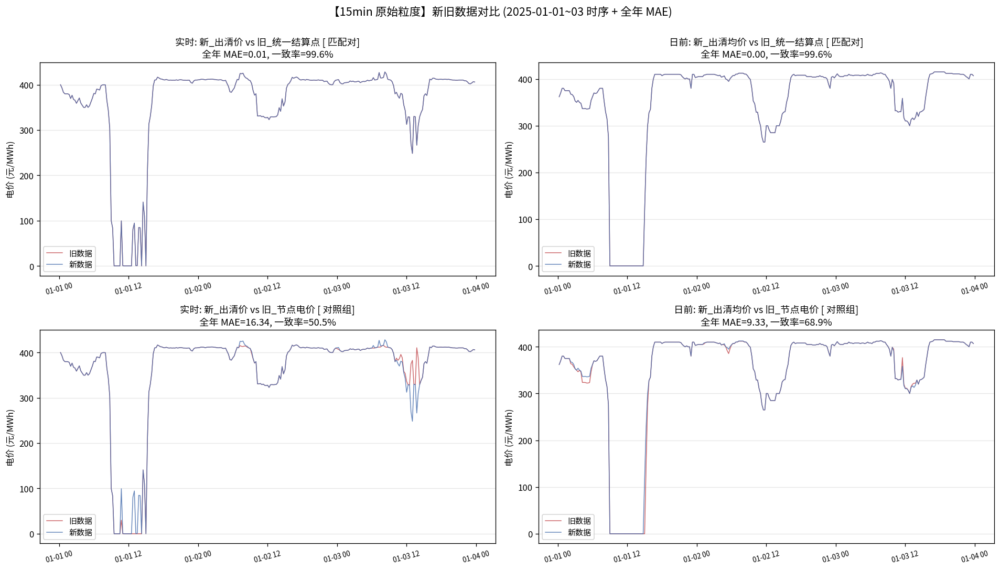
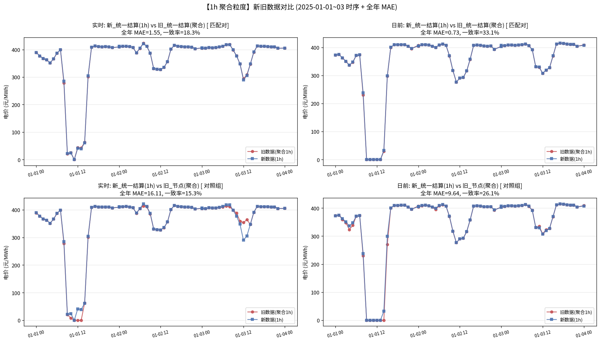
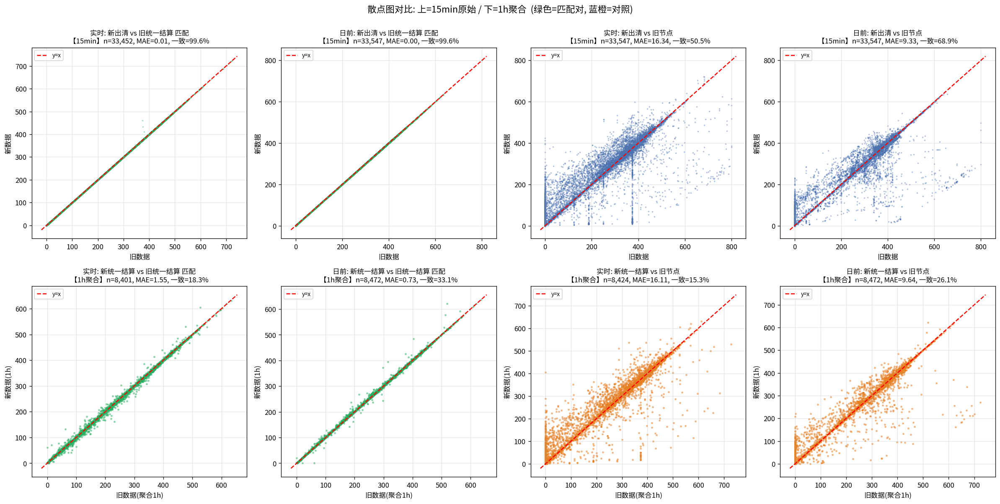
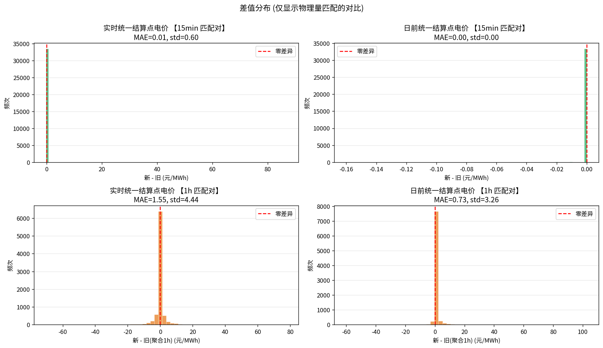

数据集A（旧） 15min 原生 4 列电价:
日前统一结算点电价、实时统一结算点电价日前节点电价、实时节点电价数据集B（新） 分两个表:
day_ahead_clearing_avg_price（日前出清均价）、real_time_clearing_price（实时出清电价）day_ahead_unified_settlement_price、real_time_unified_settlement_price关键约定: 新数据的 real_time_clearing_price 是 15min 实时出清价；24 点表是 1h 结算价。新数据没有"节点电价"这一列。
问题: 新数据 96 点表（15min）聚合到 1h 后，是否等于 24 点表（1h）原生记录？
| 物理量 | 聚合方式 | MAE | Max|diff| | 结论 |
|---|---|---|---|---|
| 日前 | 算术平均 | 0.40 | 18.85 | — |
| 日前 | 电量加权 | 0.06 | 9.20 | ✅ 24 点表 = 96 点表的电量加权价 |
| 实时 | 算术平均 | 1.13 | 45.66 | — |
| 实时 | 电量加权 | 1.06 | 45.64 | ⚠️ 电量加权也不完全吻合，24 点表是独立结算 |
结论:
real_time_clearing_price = 15min 逐点实时出清价real_time_unified_settlement_price = 1h 统一结算价（含机组/节点分摊）| 时点 | 15min 实时出清价 | 15min 电量 (MWh) |
|---|---|---|
| 13:15 | 138.50 | 3767.83 |
| 13:30 | 135.91 | 3661.69 |
| 13:45 | 133.11 | 3652.90 |
| 14:00 | 135.07 | 3682.96 |
| 算术平均 | 135.65 | — |
| 电量加权 | 135.67 | — |
| 24 点表实际值 | 181.31 | — |
共同 15min 时点: 33,547
| 物理量 | 对比项 | MAE | RMSE | 一致率 | 相关系数 | 判定 |
|---|---|---|---|---|---|---|
| 实时 | 新_出清价 vs 旧_统一结算点 | 0.01 | 0.60 | 99.6% | 1.0000 | ✓ 同物理量 |
| 实时 | 新_出清价 vs 旧_节点电价 | 16.34 | 48.67 | 50.5% | 0.9515 | ✗ 不同物理量 |
| 日前 | 新_出清均价 vs 旧_统一结算点 | 0.00 | 0.00 | 99.6% | 1.0000 | ✓ 同物理量 |
| 日前 | 新_出清均价 vs 旧_节点电价 | 9.33 | 38.07 | 68.9% | 0.9721 | ✗ 不同物理量 |
15min 匹配对（同一物理量的新旧对比）:
结论: 新旧数据在 15min 原始粒度上几乎完全一致。旧数据的"统一结算点电价"实际记录的是 15min 出清价，与新数据的 clearing_price 是同一个物理量。

共同 1h 时点: 8,472
| 物理量 | 对比项 | MAE | RMSE | 一致率 | 相关系数 | 判定 |
|---|---|---|---|---|---|---|
| 实时 | 新_统一结算(1h) vs 旧_统一结算(聚合) | 1.55 | 4.44 | 18.3% | 0.9995 | ✓ 同物理量 |
| 实时 | 新_统一结算(1h) vs 旧_节点(聚合) | 16.11 | 43.22 | 15.3% | 0.9586 | ✗ 不同物理量 |
| 日前 | 新_统一结算(1h) vs 旧_统一结算(聚合) | 0.73 | 3.29 | 33.1% | 0.9998 | ✓ 同物理量 |
| 日前 | 新_统一结算(1h) vs 旧_节点(聚合) | 9.64 | 33.93 | 26.1% | 0.9766 | ✗ 不同物理量 |
1h 对比差异来源分解:
核心结论: 新_24 点表的"实时统一结算点电价"是独立的物理量（1h 结算规则下的价格），不是 15min 出清价的聚合。



✅ 核心结论:
旧_实时节点电价 与 新_实时统一结算点 直接对比，实际是两个不同的物理量正确的物理量对应关系:
| 物理量 | 数据集A（旧）15min | 数据集B（新）15min | 数据集B（新）1h |
|---|---|---|---|
| 日前出清价 | 日前统一结算点电价 | day_ahead_clearing_avg_price |
day_ahead_unified_settlement_price（电量加权） |
| 实时出清价 | 实时统一结算点电价 | real_time_clearing_price |
— |
| 实时统一结算价 (1h) | — | — | real_time_unified_settlement_price（独立结算） |
| 日前节点 | 日前节点电价 | 新数据无此列 | |
| 实时节点 | 实时节点电价 | 新数据无此列 | |
⚠️ 项目影响:
实时统一结算点电价(元/MWh) 用的是新数据 24 点表（1h 独立结算价）real_time_clearing_price（在 cleaning.py 中命名为"实时出清电价"）是 96 点表的 15min 出清价